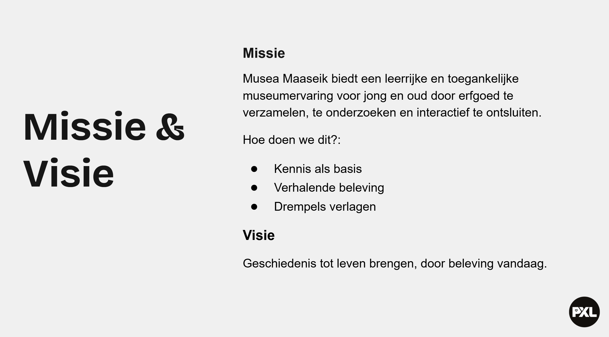
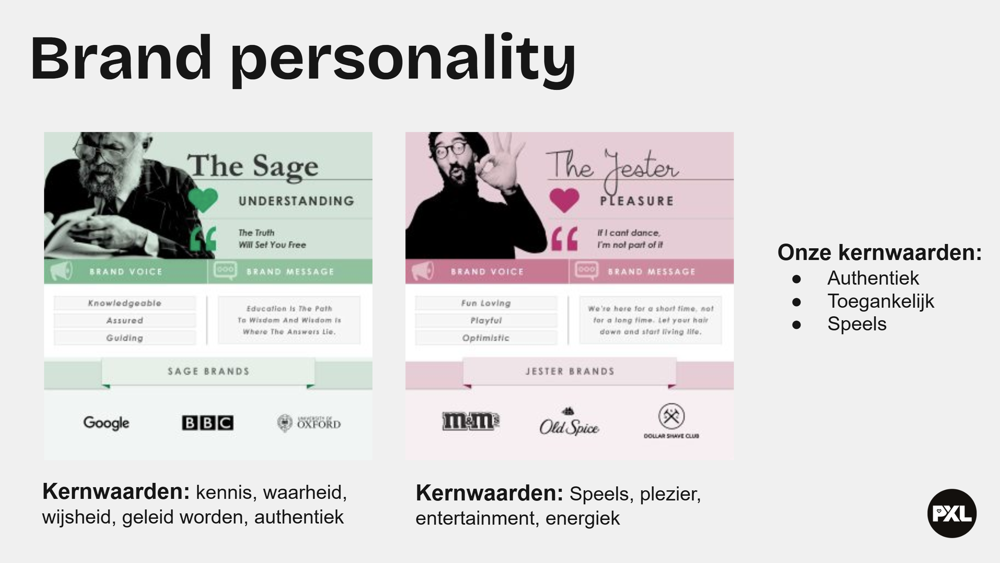
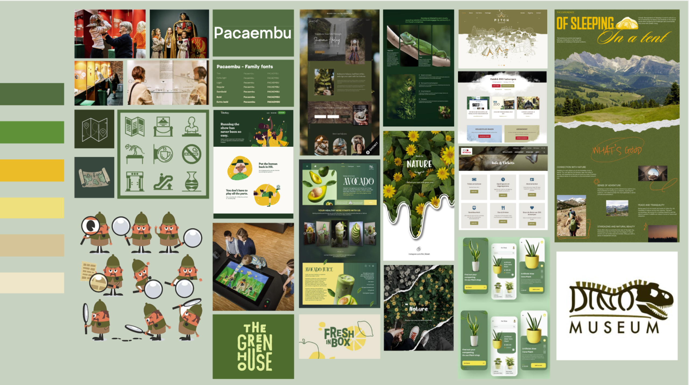
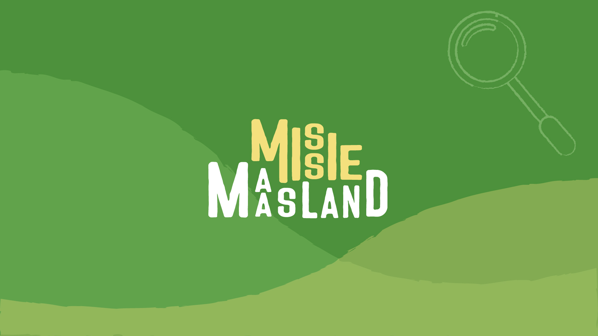
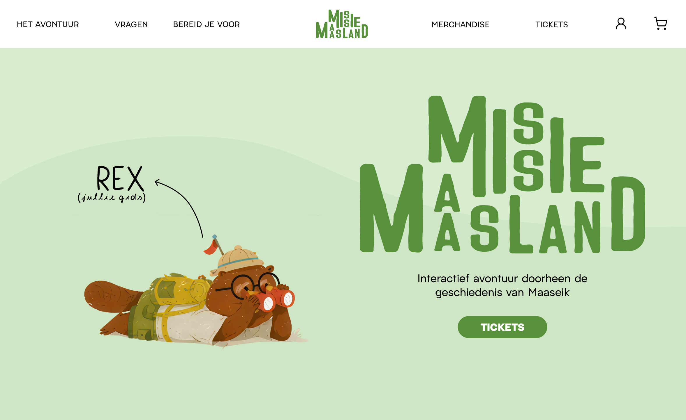
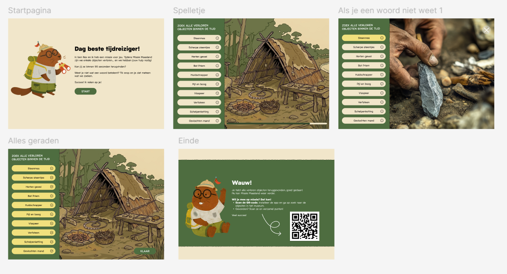
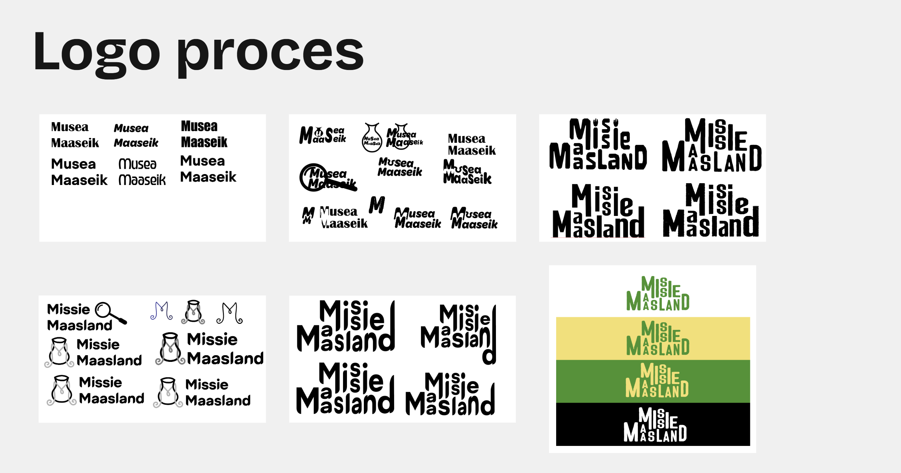

Musea Maaseik: Missie Maasland
Project
Voor het vak WPL2 werkten de opleidingen Digitale Vormgeving (DVO) en Programmeren samen aan een groepsproject voor een echt bedrijf: het Regionaal Archeologisch Museum van Musea Maaseik. De opdracht was om het museumbezoek aantrekkelijker en interactiever te maken voor zowel volwassenen als kinderen, met een sterke focus op kinderen tussen zeven en twaalf jaar. De bestaande schermen in het museum werden op dat moment vooral gebruikt voor basisinformatie. Ons doel was om deze schermen om te vormen tot een speelse en interactieve ervaring door middel van gamification.
Hiervoor ontwikkelden we het concept Missie Maasland. Om een sterke basis te creëren, voerden we eerst onderzoek uit aan de hand van surveys bij scholen en ouders. Daarnaast maakten we een concurrentieanalyse en een SWOT-analyse. Op basis van deze inzichten kwamen we tot verschillende ideeën, zoals een vernieuwde ticketpagina, een mascotte, interactieve games op de website en extra belevingselementen in het museum.
Voor we aan de uitwerking begonnen, ontwikkelden we eerst de branding van het project. We maakten moodboards, kozen kleuren en ontwierpen een logo dat aansloot bij de speelse maar toegankelijke uitstraling van het concept. Daarna konden we starten met de rebranding van de website en de digitale toepassingen.
Bij het ontwerp van de website vonden we het belangrijk om een evenwicht te bewaren tussen speelsheid en gebruiksvriendelijkheid. Daarom kozen we voor een kleurrijke, maar rustige stijl die zowel kinderen als volwassenen aanspreekt. Op de website voegden we interactieve elementen toe zoals games, kleurplaten, video’s en illustraties van de mascotte. Daarnaast werd er ook praktische informatie voorzien voor ouders, zoals een ticketpagina en een “Bereid je voor”-sectie.
Naast de website ontwikkelden we ook een app die bezoekers via een QR-code in het museum konden downloaden. Via deze app konden kinderen opdrachten uitvoeren en beloningen verdienen, zoals een foto aan de photobooth. Ook bedachten we een interactieve game voor de schermen in het museum, namelijk “Zoek het object”, waarbij bezoekers objecten in het museum moesten terugvinden. Dankzij een ingebouwde helpfunctie bleef de game toegankelijk voor verschillende leeftijden. Verder werkten we ook een socialmediacampagne uit en gaven we het merk Missie Maasland een eigen persoonlijkheid en uitstraling.
Brandbook
Mijn aandeel binnen het project
Sprint 1
Tijdens sprint 1 lag mijn focus voornamelijk op research en analyse. Ik onderzocht verschillende bedrijven, waaronder Technopolis en Kinepolis, om inspiratie op te doen rond beleving, interactie en doelgroepgericht design. Daarnaast werkte ik mee aan de SWOT-analyse en dacht ik samen met het team na over de eerste concepten voor de website en de algemene richting van het project. Ook hielp ik bij het opstellen van de missie en visie van het merk.


Sprint 2
In sprint 2 kwam het brandinggedeelte sterker naar voren. Mijn bijdrage bestond uit het maken van moodboards, het ontwerpen van wireframes en het uitwerken van het visuele design en prototype van de app en de interactieve schermen. Daarnaast werkte ik mee aan de wireframes voor de desktopversie van de website. Ook ontwierp ik samen met een medestudent het logo, dat uiteindelijk het definitieve logo werd.


Sprint 3
Tijdens sprint 3 lag de focus op finetuning en optimalisatie. De kleuren en visuele stijl van de website, app en schermen werden verder aangepast om het contrast en de toegankelijkheid te verbeteren. Daarnaast werd de website volledig responsive gemaakt voor verschillende schermformaten.



Wat ik uit dit project geleerd heb
Door dit project heb ik geleerd dat een sterk eindresultaat tijd, feedback en meerdere verbeteringen nodig heeft. Niet alles is meteen perfect, en net dat proces van experimenteren, aanpassen en opnieuw proberen maakt design zo leerrijk. Daarnaast heb ik geleerd hoe belangrijk communicatie en duidelijke afspraken zijn binnen een team. Door elkaar goed op de hoogte te houden verliep de samenwerking vlotter. Tot slot heb ik ingezien dat design veel meer is dan alleen iets visueel aantrekkelijk maken. Achter elk ontwerp zit een volledig proces van research, strategie en testing.
